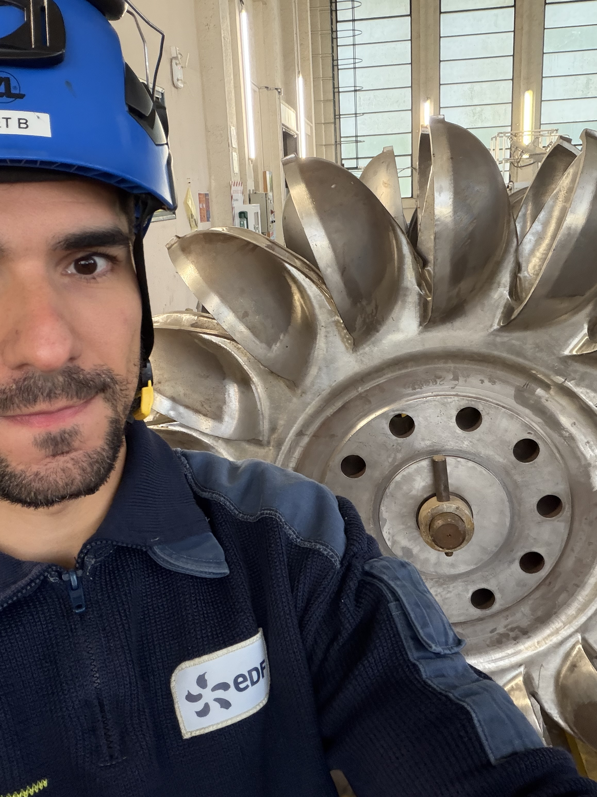

Benoît Gerbet ; Apprenti Ingénieur au sein de l'ENSEEIHT Toulouseen Electronique, Energie Electrique et Automatique
Au sein d’**EDF Hydro depuis 2013**, j’ai développé des solides connaissances dans l’exploitation des aménagements hydroélectriques. Aujourd’hui, en parallèle de mes fonctions à EDF Hydro Sud-Ouest, je complète cette expérience de terrain par une reprise d’études à l’ENSEEIHT afin d’obtenir un diplôme d’ingénieur et de renforcer mes compétences techniques, méthodologiques et transversales.

Mon défi
Reprise des études après 13 années de travail
3ème Année
Diplôme d'Ingénieur ENSEEIHT (3EA)
+10 Ans
Dans l'Exploitation des Aménagements Hydroélectriques chez EDF Hydro
Parcours Professionnel & Formation
Chronologie de mon évolution au sein d'EDF Hydro et de l'ENSEEIHT
Centrale Hydroélectrique & Usine10+ ans de terrain & conduite d'ouvrages
Spécialisation en Génie Électrique, Hydraulique & Mécanique des Fluides.
Modélisation numérique des réseaux, conversion d'énergie, automatique et systèmes intelligents.
Projets transversaux d'ingénierie appliqués aux enjeux de décarbonation et de flexibilité hydroélectrique.
Novembre 2013 - Présent (Salarié CDI) France (Unités Hydroélectriques)
EDF Hydro – Parcours & Responsabilités Techniques
Poste de Technicien d'Exploitation & Maintenance vers Ingénierie
Supervision, maintenance et conduite des aménagements hydroélectriques (barrages, usines de haute et moyenne chute).
Gestion des risques industriels, consignations électriques et hydrauliques, analyse de défaillance sur groupes turbogénérateurs.
Participation aux projets de rénovation des automatismes et d'optimisation des rendements de turbines (Francis, Kaplan, Pelton).
Projets d'Ingénierie & Réalisations
Travaux académiques ENSEEIHT et projets industriels chez EDF Hydro
Focus Ingénierie & Modélisation
Projet de Fin d'Études & Études Hydrauliques
Application directe des méthodes de modélisation physique (Matlab/Simulink, CFD) aux problématiques concrètes d'optimisation des machines hydrauliques et de stabilisation du réseau électrique national.
EDF Hydro x N7
Optimisation du Rendement Turbine Francis
Étude des phénomènes de cavitation et modélisation hydraulique pour maximiser l'efficacité énergétique lors des variations de charges réseau.
HydrauliqueMatlab/SimulinkFrancis
Projet Académique N7
Supervision Micro-Réseau & STEP
Dimensionnement et régulation d'une Station de Transfert d'Énergie par Pompage (STEP) couplée à un parc éolien local.
Smart GridAutomatiqueStockage
EDF Hydro
Automatisme & Démarrage Noir (Black-Start)
Mise à jour des procédures de réalimentation du réseau électrique en cas de blackout à partir de centrales hydroélectriques autonomes.
SCADARéseau TSOSûreté
Mobilité Internationale & Inter-Sites
Immersions professionnelles, déplacements stratégiques et ouvertures à l'international
Territoires & Réseaux
Immersion sur le Parc Hydroélectrique
Déplacements réguliers à travers les vallées hydrauliques (Pyrénées, Alpes, Massif Central) pour audits de sûreté, arrêts de tranche et réunions d'ingénierie inter-sites.
Interventions Inter-Sites Hydroélectriques
Déplacements et immersions sur divers aménagement hydrauliques (Haute-Chute Pyrénées/Alpes, Fil de l'eau Vallée du Rhône) pour expertises d'ingénierie et arrêts programmés.
Polyvalence terrain & adaptabilité multi-sites
Ouverture Internationale & Réseau Européen
Visites d'installations énergétiques européennes, participation aux échanges N7 internationaux et veille technologique sur le stockage par pompage en Europe (Suisse, Espagne).
Pratique régulière de l'anglais technique (TOEIC C1)
Engagement Civique & RSE
Sensibilisation, tutorat et actions pour la transition citoyenne
Transmettre & S'engager dans la Cité
Fort de mon expérience de reprise d'études et de 10 années en entreprise, je m'investis activement dans le parrainage des jeunes alternants, la promotion de la sécurité au travail et les actions environnementales autour des retenues hydrauliques.
Tutorat & Parrainage
Accompagnement des jeunes alternants et techniciens chez EDF Hydro. Partage d'expérience sur la reprise d'études promotionnelle.
Sensibilisation Énergie & Climat
Animation d'ateliers sur la biodiversité autour des retenues d'eau et sensibilisation au rôle de l'hydroélectricité dans la décarbonation.
Éthique & Sécurité Industrielle
Ambassadeur des bonnes pratiques de sécurité et de la prévention des risques au travail sur les chantiers hydroélectriques.
Sport & Activités Extérieures
Valeurs d'endurance, de gestion de l'effort et passerelles vers le métier d'ingénieur
Dépassement de Soi
Haute Montagne, Trail & Esprit d'Équipe
La montagne exige anticipation, rigueur et respect des règles de sécurité. Des qualités indispensables qui irriguent au quotidien ma posture d'ingénieur en centrale hydroélectrique.
Randonnée & Haute Montagne (Pyrénées/Alpes)
Pratique régulière du trail et des ascensions en haute montagne. Une école d'humilité face aux éléments naturels qui résonne directement avec le respect des ouvrages hydrauliques.
↳ Passerelle Ingénieur : Préparation rigoureuse, gestion des risques et prise de décision en environnement complexe.
Sports Collectifs & Endurance
Pratique du vélo de route et participation aux activités sportives inter-entreprises EDF / ENSEEIHT.
↳ Passerelle Ingénieur : Esprit de groupe, solidarité dans l'effort et persévérance sur le long terme.
Accès Sécurisé
Veuillez saisir le code PIN pour accéder à cette ressource réservée.